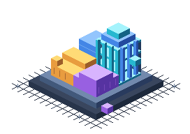

.rvt
.nwc
Файл обрабатывается на вашем устройстве.

Перетащите модель сюда
Файлы обрабатываются в браузере и остаются на вашем устройстве.
Список появится после выбора исходного файла.
Для этих форматов исходная модель должна содержать соответствующие данные.
Выберите исходный RVT или RFA.
Экспериментально. Часть данных, специфичных для новой версии, может быть недоступна в полученной копии.